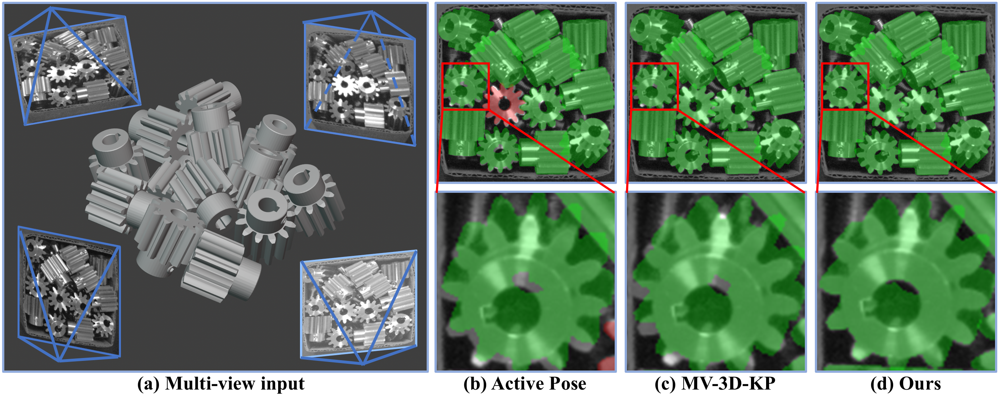
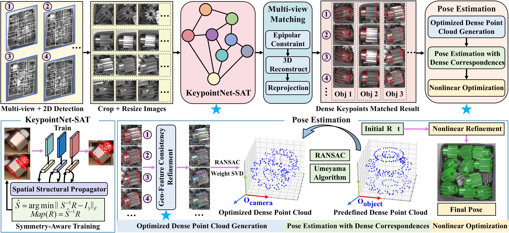
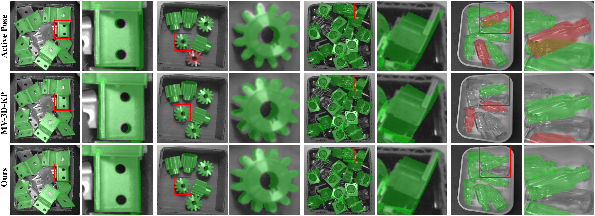

6D pose estimation of textureless objects is fundamental to industrial robotic perception and manipulation. Compared with single-view pipelines, multi-view observations provide complementary geometric cues that help reduce depth, scale, and viewpoint ambiguities. However, most existing multi-view approaches either depend on RGB-D input or introduce cross-view information only after single-view pose estimation, which limits the effective use of cross-view geometric consistency. To address these limitations, we propose GFCPose, an RGB-only framework that establishes multi-view geometry through dense keypoints. We first formulate an MLE-based multi-view pose estimation method over dense keypoints. To provide reliable inputs for the MLE solver, we design a keypoint localization strategy that first predicts dense keypoints in each view and then jointly refines them across views. To improve per-view reliability, we introduce a Spatial Structural Propagator (SSP) to model local geometric relations among dense keypoints. To strengthen cross-view reasoning, we further introduce a Geo-Feature Consistency Refinement Module (GFCRM) with Geometric Correspondence Alignment (GCA) to enforce geometric and feature consistency across views. This module corrects single-view predictions and provides more accurate inputs for pose solving. In addition, for symmetric objects, we propose a multi-view Symmetry-Aware Training strategy (SAT) to resolve rotational ambiguity. The final pose is estimated through a three-stage progressive MLE optimization procedure. Extensive experiments on ROBI, TROBI, and XYZ-IBD show that GFCPose consistently outperforms state-of-the-art RGB methods and further surpasses RGB-D methods in depth-degraded scenarios.

GFCPose improves multi-view 6D pose estimation for textureless objects using RGB observations with stronger geometric and feature consistency.
Given multi-view RGB images and 2D bounding boxes, GFCPose extracts dense keypoints, establishes cross-view matches, refines the matched observations with geometric and feature consistency, and estimates the final 6D pose through a progressive optimization pipeline.

Quantitative comparison against recent methods. The results summarize the performance gains of GFCPose over previous approaches across benchmark settings.
